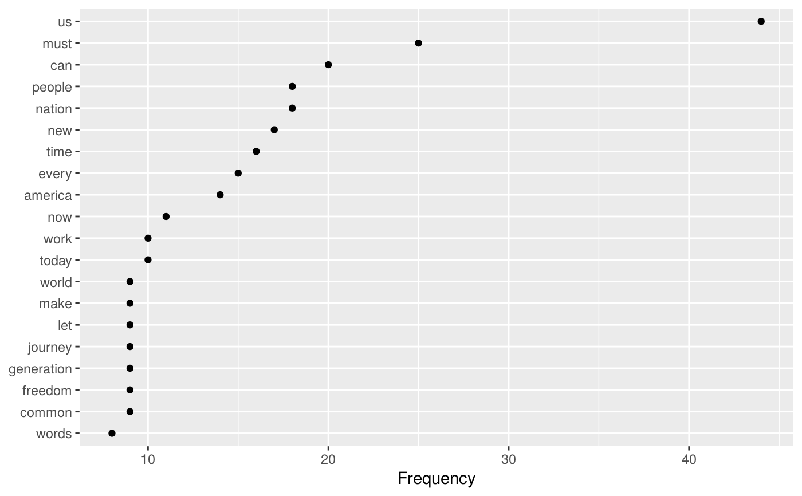
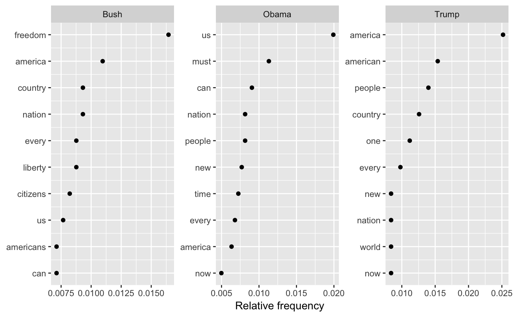

textstat_frequency.RdProduces counts and document frequencies summaries of the features in a dfm, optionally grouped by a docvars variable or other supplied grouping variable.
textstat_frequency(x, n = NULL, groups = NULL)
| x | a dfm object |
|---|---|
| n | (optional) integer specifying the top |
| groups | either: a character vector containing the names of document variables to be used for grouping; or a factor or object that can be coerced into a factor equal in length or rows to the number of documents. See groups for details. |
a data.frame containing the following variables:
feature(character) the feature
frequencycount of the feature
rankrank of the feature, where 1 indicates the greatest frequency
docfreqdocument frequency of the feature, as a count (the number of documents in which this feature occurred at least once)
docfreqdocument frequency of the feature, as a count
group(only if groups is specified) the label of the group.
If the features have been grouped, then all counts, ranks, and document
frequencies are within group. If groups is not specified, the group
column is omitted from the returned data.frame.
textstat_frequency returns a data.frame of features and
their term and document frequencies within groups.
#> feature frequency rank docfreq group #> 1 a 6 1 3 all #> 2 d 4 2 2 all #> 3 b 2 3 1 all #> 4 c 1 4 1 all#> feature frequency rank docfreq group #> 1 a 5 1 2 one #> 2 b 2 2 1 one #> 3 c 1 3 1 one #> 4 d 1 4 1 one #> 5 d 3 1 1 two #> 6 a 1 2 1 twodfmat2 <- corpus_subset(data_corpus_inaugural, President == "Obama") %>% dfm(remove_punct = TRUE, remove = stopwords("english")) tstat1 <- textstat_frequency(dfmat2) head(tstat1, 10)#> feature frequency rank docfreq group #> 1 us 44 1 2 all #> 2 must 25 2 2 all #> 3 can 20 3 2 all #> 4 nation 18 4 2 all #> 5 people 18 5 2 all #> 6 new 17 6 2 all #> 7 time 16 7 2 all #> 8 every 15 8 2 all #> 9 america 14 9 2 all #> 10 now 11 10 2 all# plot 20 most frequent words library("ggplot2") ggplot(tstat1[1:20, ], aes(x = reorder(feature, frequency), y = frequency)) + geom_point() + coord_flip() + labs(x = NULL, y = "Frequency")# plot relative frequencies by group dfmat3 <- data_corpus_inaugural %>% corpus_subset(Year > 2000) %>% dfm(remove = stopwords("english"), remove_punct = TRUE) %>% dfm_group(groups = "President") %>% dfm_weight(scheme = "prop") # calculate relative frequency by president tstat2 <- textstat_frequency(dfmat3, n = 10, groups = "President") # plot frequencies ggplot(data = tstat2, aes(x = nrow(tstat2):1, y = frequency)) + geom_point() + facet_wrap(~ group, scales = "free") + coord_flip() + scale_x_continuous(breaks = nrow(tstat2):1, labels = tstat2$feature) + labs(x = NULL, y = "Relative frequency")